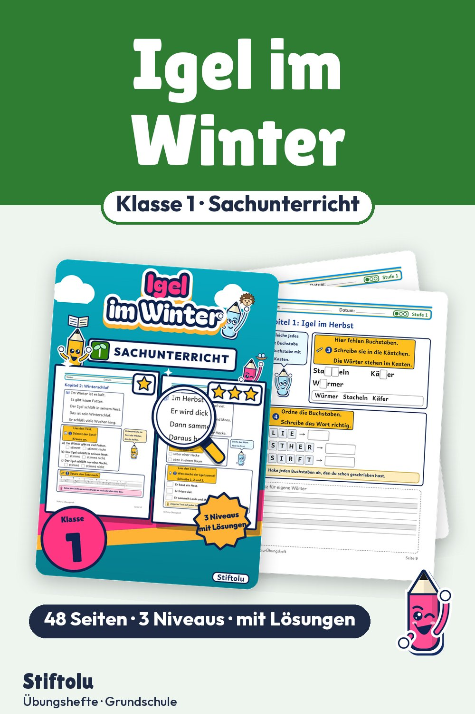

Werbung · Übungsheft von Stiftolu
Igel im Winter: Sachtexte lesen in Klasse 1 mit Winterschlaf

Laub, Nest, Käfer, Winterschlaf: Diese Wörter schreiben Erstklässler, nachdem sie kurze Sachtexte über den Igel gelesen haben. Drei Kapitel begleiten das Tier vom Herbst bis zum Winterschlaf und zeigen, wie man Igeln im Garten hilft. Lösungen und drei Niveaus gehören zu den 48 Seiten, die erhältlich auf eduki sind.